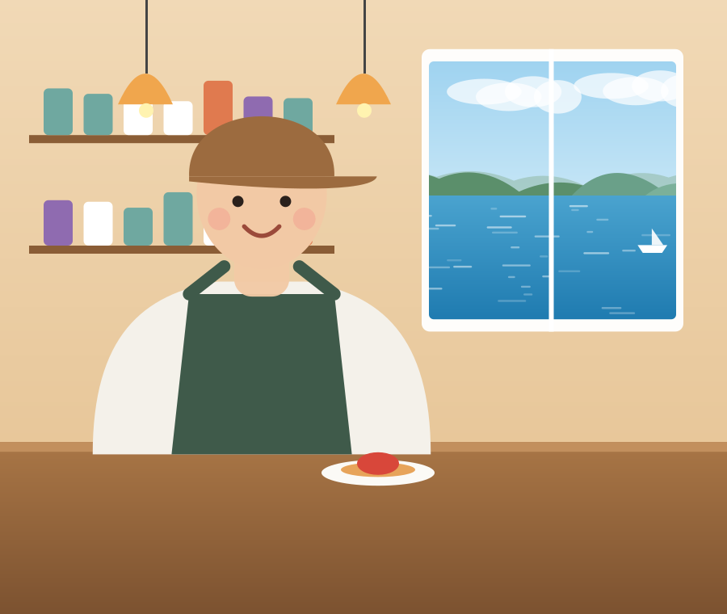
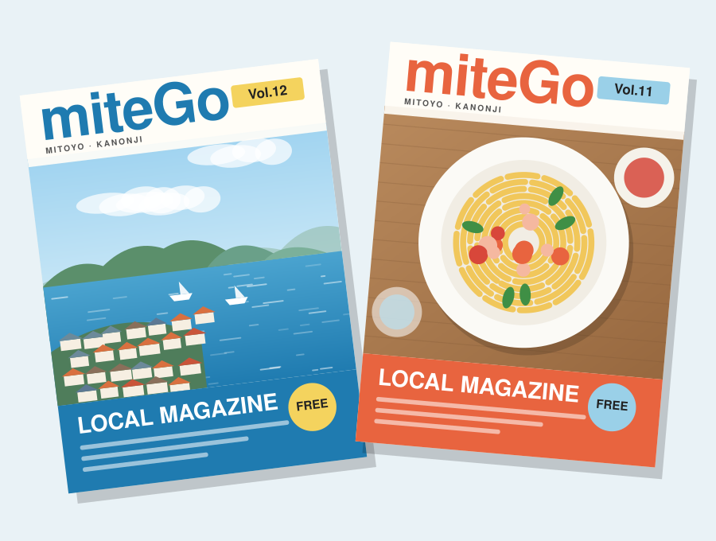
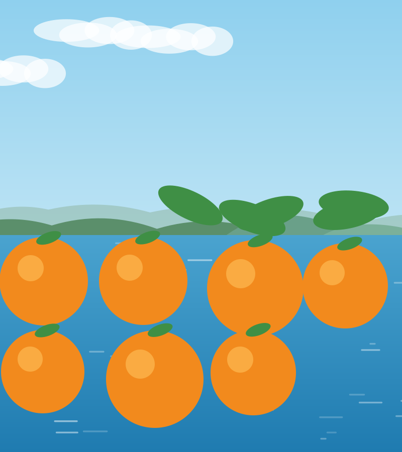
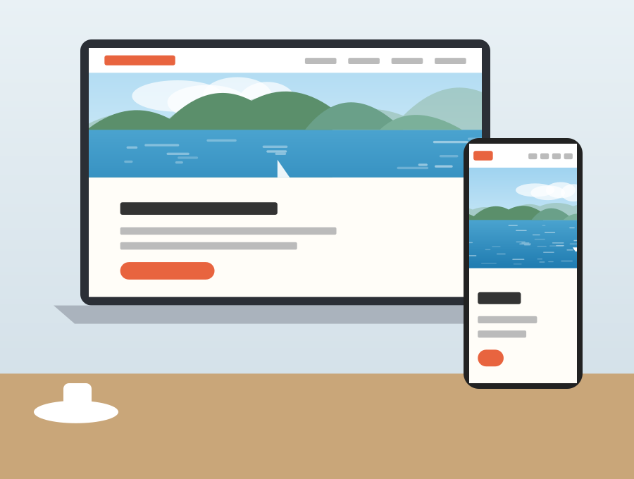
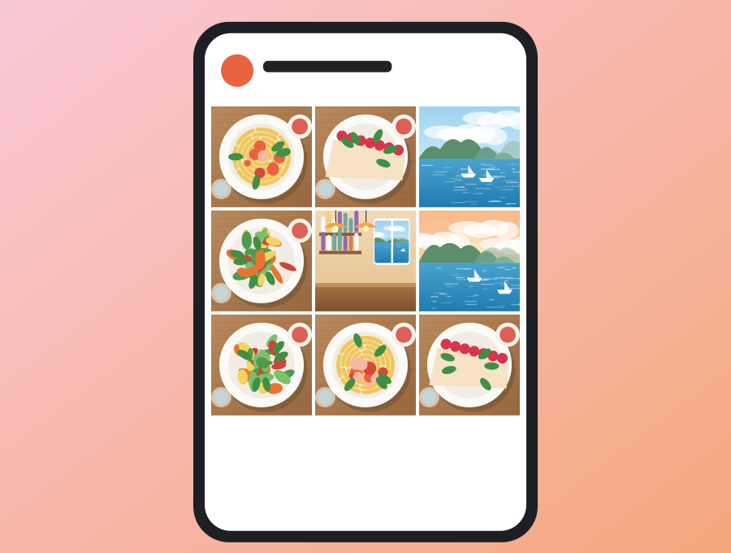
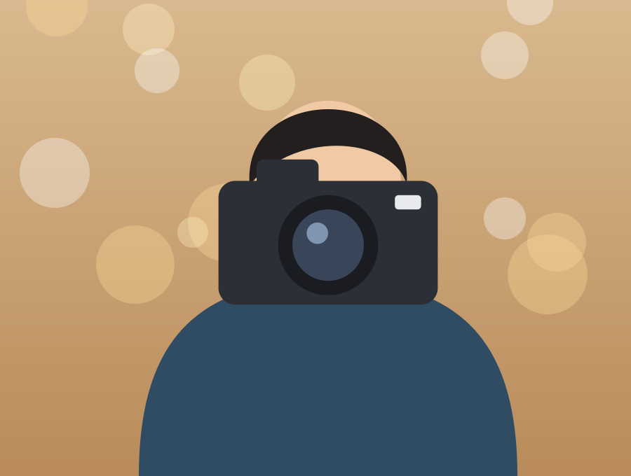
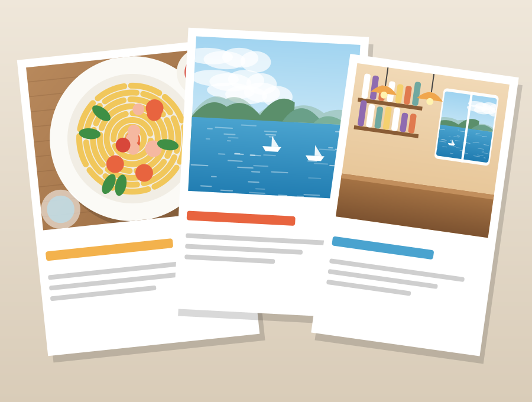
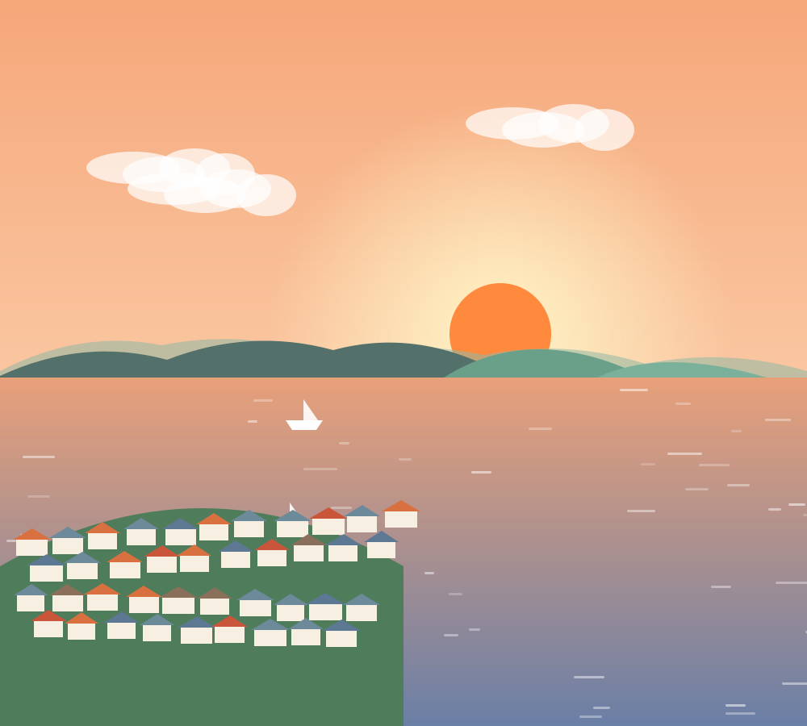
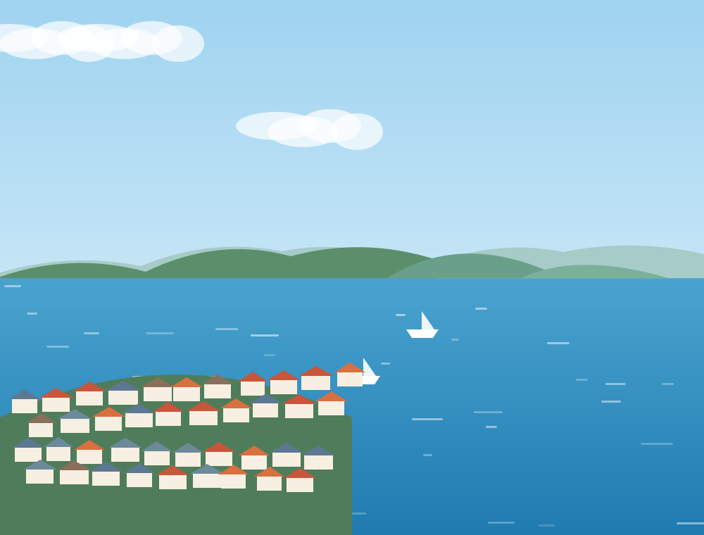

LOCAL × CREATIVE × EDITORIAL
ジモトを、 もっとおもしろく。
三豊・観音寺の魅力を、
もっと見つけて、もっと伝えて、もっとつなげる。
地域情報誌「miteGo」をはじめ、Webサイト、SNS、LINE、写真・動画など、さまざまな方法で地域のお店や企業の「伝えたい」をカタチにします。
私たちについて


この町には、
まだまだ知らない
「いいこと」がある。
ABOUT
私たちは、地域の
「広報担当」です。
いい商品がある。
いいサービスがある。
いい会社がある。
でも、それが知られていなければ、ないのと同じかもしれません。
私たちが大切にしているのは、広告をつくることだけではなく、そのお店や会社の「いいところ」を一緒に見つけること。
誰に届けるのか。
何を伝えるのか。
どんな方法なら届くのか。
地域を知る私たちだからこそできる方法で、三豊・観音寺のお店や企業の集客・採用・情報発信をサポートします。
一緒に、
いいところを探します。
OUR BUSINESS
地域の「伝えたい」を、
いろんなカタチに。
- 01miteGo 地域情報誌 三豊・観音寺の「知らなかった」を届ける地域情報誌。企画・取材・撮影・ライティング・デザイン・発行まで対応します。 詳しく見る
-
02WEB SITE
ホームページ制作

地域のお店に、ちゃんと使えるホームページを。制作して終わりではなく、集客に使い続けられるサイトをつくります。 詳しく見る -
03SNS SUPPORT
SNS運用支援

投稿するだけじゃない。「見て」「行ってみたい」につながるInstagramを。企画・撮影・投稿・運用までお手伝いします。 詳しく見る - 04LINE OFFICIAL LINE公式アカウント支援 来てくれたお客様と、ちゃんとつながり続ける。クーポンや情報配信、リピーターづくりをサポートします。 詳しく見る
-
05PHOTO & MOVIE
写真・動画・ドローン撮影

「行ってみたい」は、一枚の写真から。広告・料理・スタッフ・ショート動画・ドローンまで、魅力が伝わる写真と動画を。 詳しく見る -
06DESIGN & CONTENT
デザイン・コンテンツ制作

チラシ・パンフレット・会社案内・広告まで。取材・構成・ライティング・撮影・デザインをまとめて対応します。 詳しく見る

このまちの
「いいこと」を
もっと。
WHY US
地域を知っている。
だから、届く方法を考えられる。
LOCAL
地域を知っている。
EDIT
魅力を見つけ、
伝わる形に編集する。CREATIVE
紙・Web・SNS・写真・動画まで
まとめて対応する。SUPPORT
必要なものから
小さく始められる。
SERVICE PACKAGE
お店の集客、
まとめてスタート。
LOCAL
STARTER KIT
ローカル スターター キット
ホームページ、Instagram、Google、LINE公式、写真・動画など、地域店舗の情報発信に必要なものをまとめて整えるサービスです。
「何から始めればいいかわからない」というお店でも、集客の土台を一緒につくります。
- 必要なものだけ選べる
- 撮影から運用までワンストップ
- 小さく始めて、育てていける
WORKS
私たちが一緒につくったもの。
PICK UP NEWS
地域の「今」をピックアップ。
MAGAZINE
三豊・観音寺の
「知らなかった」を届ける。
miteGo
地域情報誌
地元のお店・人・風景・イベントを、写真と言葉でじっくり編集した地域情報誌。まだ知られていない「いいこと」を、毎号お届けします。
最新号を見るRECRUIT
地元で、
おもしろい仕事をしよう。
- 地域のお店を取材する。
- 魅力を見つける。
- 写真を撮る。
- 文章を書く。
- デザインする。
- Webをつくる。
地域だからこそできる、クリエイティブな仕事があります。お店の人と話して、まちを歩いて、いいところを見つけて、カタチにする。そんな仕事を、一緒にしませんか。
採用情報を見る
MISSION
ジモトを
もっとおもしろく
COMPANY
会社概要
- 会社名
- 三豊コンシェルジュセンター株式会社
- 代表取締役
- 和田 壮平
- 所在地
- 香川県三豊市仁尾町仁尾辛34番地2
三豊市役所仁尾庁舎3階 - 事業内容
- 地域情報誌miteGoの企画・編集・発行
- 広告企画・制作
- Webサイト制作
- SNS運用支援
- LINE公式アカウント支援
- 写真・動画撮影
- グラフィックデザイン
- イベント企画・運営
- 地域プロモーション